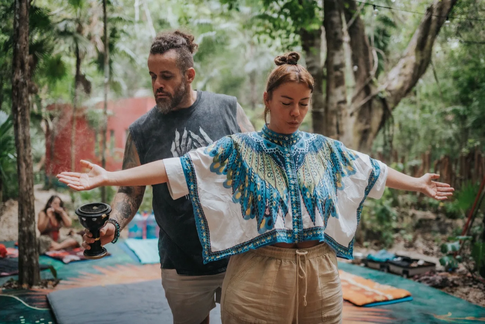

A school for ethical preparation and ethical integration in sacred medicine work. What has to happen before a person ever sits down, what has to happen in the months afterward, and what makes either of those ethical.
Nearly all of the attention in this field goes to the few hours in the room. Nearly all of the harm, and nearly all of the lasting benefit, is decided outside it.
Tiger Soul Academy teaches two disciplines. How to prepare a person honestly, and how to help them integrate what happened without doing further damage. That means the screening conversation, informed consent, the weeks beforehand, the design of the container, the first hard week afterward, the long ordinary months after that, and the point at which someone needs more help than you are qualified to give.
Preparation is everything that happens before a person sits down. It becomes ethical when it is genuinely capable of arriving at no.
A complete medical, psychiatric, and medication history, reviewed by someone whose income does not depend on the answer. A screening process that has never turned anyone away is not a screening process.
The person has to understand what is being offered, what is known about it, what is not known, what the real risks are, and what they are agreeing to in the room, including touch. In plain language, in writing, and well in advance.
Small, specific intentions hold up better than large outsourced ones. Part of preparing someone is helping them hear what they are actually asking for, and saying plainly when a ceremony is not the thing that answers it.
Who they will talk to in the first week, and in the first month, decided before they arrive. If that question has no answer, the preparation is not finished.
Not right now is a complete answer, and it prevents more harm than any protocol. Every practitioner has to be able to give it, including on the occasions when it costs them money.
Integration is what a person does with an experience once they are back inside an ordinary week. It becomes ethical when it serves the person rather than the story being told about them.
The person makes the meaning. Interpreting someone's experience for them, especially in the raw first days, installs your framework in a mind that is unusually open to taking it on.
The measure is whether ordinary life improves. Sleep, work, money, the people they live with. Someone who can only feel well inside the community that hosted them has not integrated anything yet.
Some difficulty afterward is ordinary and resolves on its own. Some of it is a clinical presentation that belongs with a psychiatrist. Telling those apart is a teachable skill, and it is not optional.
Integration support that routes steadily back toward the next purchase is a sales funnel wearing a kind expression. The goal is a person who no longer needs you.
Knowing the edge of your competence, having the names and numbers ready before you need them, and using them early rather than after it gets frightening.

Eight modules on screening, consent, the container, and the long arc afterward. The prerequisite for everything else.
Course outline
The full intensive in the jungle outside Puerto Morelos. Your own inner work first, then the curriculum in screening, safety, ethics, and integration practice.
Course outline
For therapists, coaches, and clinicians who sit with people after a ceremony and want to understand what they are looking at.
Course outlineThe sequence we teach is the sequence we use. It runs for months, and the ceremony itself sits about a third of the way through it.
Thirty minutes before anything else, mostly us asking questions. Some of these end with us saying this is not the right moment, and that is a good outcome, not a failed one.
Full medical, psychiatric, and medication history, reviewed by a clinician, completed before any payment is taken. Anything that needs a doctor's opinion goes to a doctor.
Written preparation, less alcohol and cannabis, real sleep, and the conversation the person has been putting off for a year. A surprising amount of what people credit to a ceremony actually starts here.
Who is in the room, what each of them is responsible for, what the consent agreement says about touch and about stopping, and what happens if something goes wrong. Settled and written down before the day, never improvised on it.
Rest, low stimulation, no large decisions, and one scheduled conversation with someone who knew the person before any of this started.
Contact at set intervals, a written record kept by the person themselves, and a clear referral out the moment what has surfaced needs more than we are qualified to give.
The library is free and unlocked. No email wall, no funnel.
If someone is considering this kind of work, or has already been through a ceremony and is trying to make sense of it, the honest information should not sit behind a purchase. Twelve subjects, revised as our own understanding changes.
Browse all subjects
What the word ethical is doing there, and what it asks of anyone offering this work.
Read 02What responsible support after a ceremony looks like, and what quietly makes it worse.
Read 05The history that has to be taken, and the questions people are most tempted to skip.
Read 06Why consent is harder here than almost anywhere else, and how the money distorts it.
ReadThe people who get hurt are rarely hurt in the ceremony. They are hurt by what nobody did in the months on either side of it.Blaine Mueller, Founder

Tiger Soul has prepared and sat with people since 2016. The teaching draws on that experience, on the published literature, and on the medical and psychological professionals who review our curriculum and are willing to tell us it is wrong.
Students come from clinical practice, from bodywork, from ministry, and from their own recovery. The room is usually more interesting than the syllabus.
Meet the facultyEvery training starts with a conversation. Tell us where you are and what you are looking for, and we will tell you honestly whether this is the right room for you.